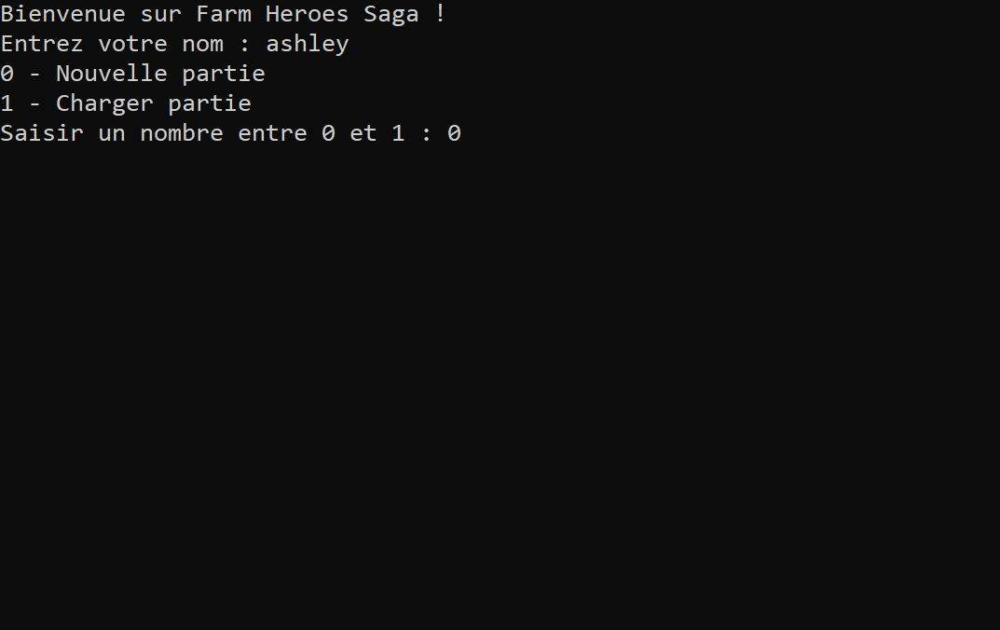Menu
Le joueur commence par inscrire son prénom. Il peut soit commencer une nouvelle partie sois charger une partie. Cela dépend de son
enregistrement dans le fichier de sauvegarde. Les nouvelles parties ne concernent pas que les nouveaux joueurs. En effet elles permettent au joueur déja sauvegarder de recommencer le jeu sans que cela affecte sa dernière partie sauvegarder à moins qu'il en décide autrement.
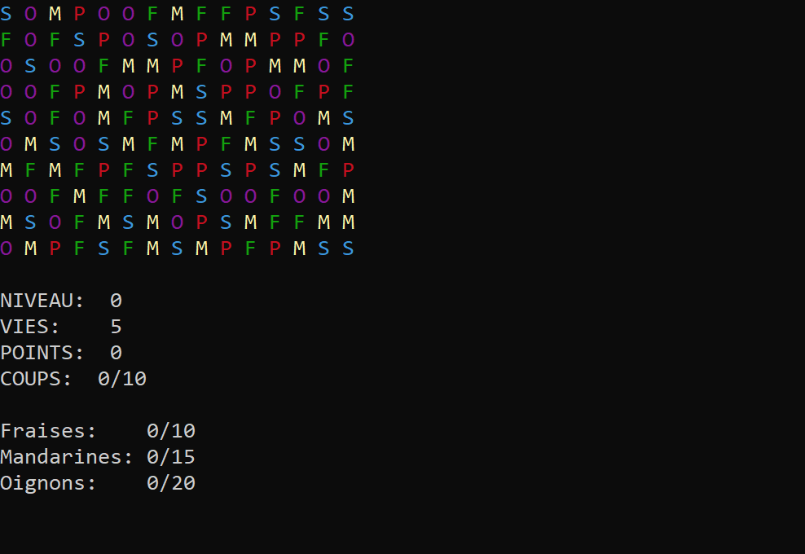Nouvelle partie
Le plateau de jeu se présente comme une matrice de caractères 10 lignes x 15 colonnes contenant aléatoirement les lettres "S" pour soleil, "F" pour fraise, "P" pour pomme, "O" pour oignon, et "M" pour mandarine.
Le joueur a pour objectif de remplir un contrat qui lui est annoncé au début du tableau. Il correspond à un nombre préfixé d'items à "manger" en un nombre préfixé de coups. Le contrat est différent sur chaque tableau et la difficulté est croissante.
Pour accumuler des points le joueur doit sois former un groupe de 3, de 4, de 5 ou sinon en L en Croix ou en T.
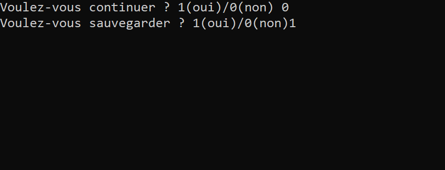Partie gagnée
Si le joueur rempli son contrat dans le nombre de coups préfixé, le jeu lui propose de passer au tableau suivant ou de sauvegarder sa partie en cours. Le fait d'accomplir un tableau, le jeu remet à cinq le compteur de vie si il en avait perdu auparavant.
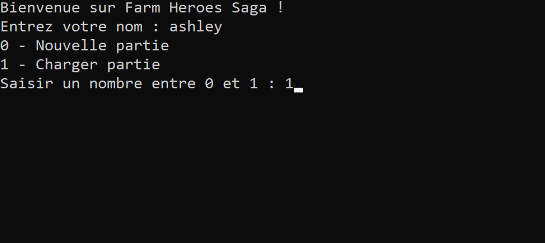Chargement partie
Ici, le joueur décide de charger une partie. C'est à dire qu'il va attérir sur sa dernière partie sauvegarder.
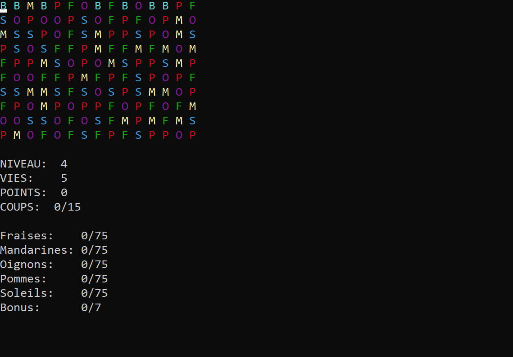Partie chargée
J'ai décidée de vous présenter le dernier niveau. Celui-ci est un peu différent des autres. En effet, on peut voir afficher dans la première ligne, les lettres B qui signifient "bonus". Le but de ce niveau est que toutes les lettres B descendent au fur et à mesure de la partie jusqu'à atteindre la dernière ligne. Lorsque elle aura atteint celle-ci, toute la ligne se supprimera. Cela permettra au joueur de remporter un point bonus en plus d'un point pour chaque items supprimés.
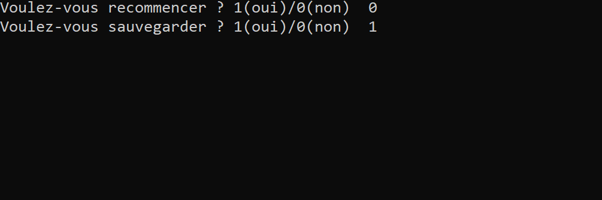Partie perdue
En cas d'échec, le joueur consomme une vie et le jeu lui propose de recommencer le même niveau ou sauvegarder la partie en cours. Au bout de 5 vies, le joueur a perdu et le jeu s'arrête. Le fait de quitter le jeu remet à cinq le compteur de vie.
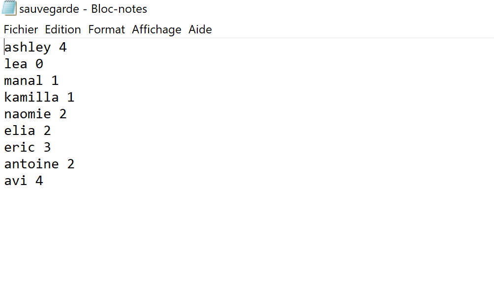Fichier sauvegarde
Le programme enregistre dans un fichier le nom du joueur et les niveaux accomplis pour que la prochaine partie
commence sur le prochain tableau à accomplir.
Page d'accueil
Le musée de l’illusion est un site web fictif créer pour la promotion d’un musée.
Dans cette application, il y a une partie front-end (écrans) et une partie back-end (gestion des données de connexion dans une base de données SQL).
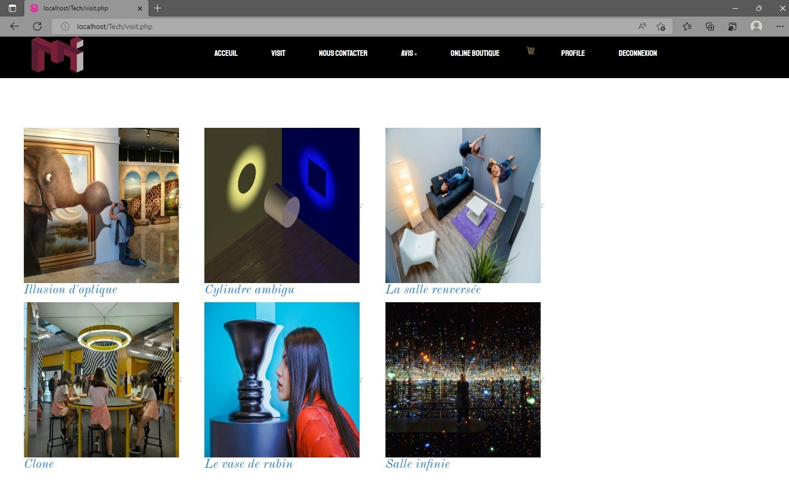Page de visite
Sur cet écran, les différents catégories d’œuvres seront présentées. C’est la porte d’entrée pour la visite. Il faut cliquer sur une catégorie pour en visionner le détail. A la fin, l’utilisateur sera redirigé vers cet écran pour le visionnage des autres catégories ou le retour à l’écran d’accueil.
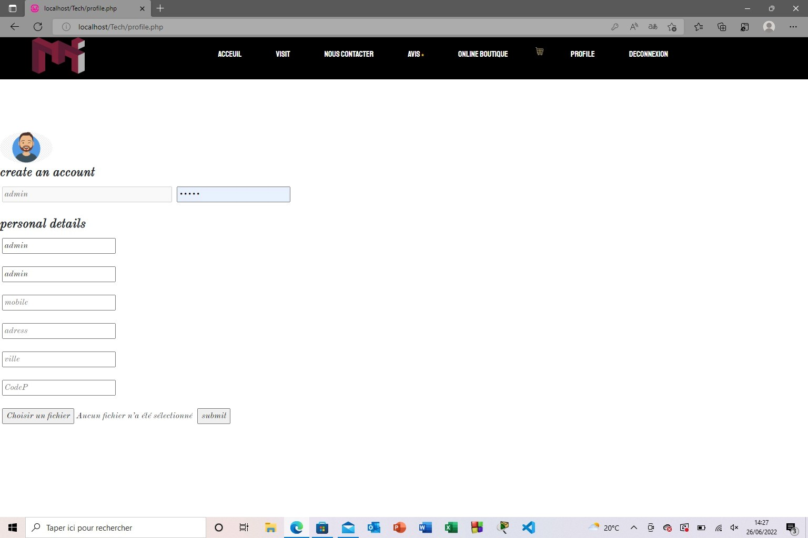Page contact
Cette fonctionnalité permet à un utilisateur d’envoyer un mail au responsable de l’entreprise.
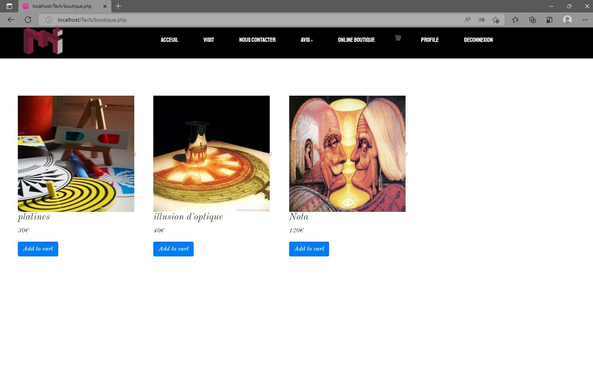Panier
Chaque utilisateur peut, s'il le souhaite, sélectionner une oeuvre et la rajouter dans son panier pour ensuite l'acheter.
Création d'un compte client
Tout utilisateur doit créer son compte avant d’arriver sur le site du musée. Ce compte n’est actif que si l’administrateur le valide. A tout moment, un compte peut être radié par l’administrateur.
Le login de chaque utilisateur est son adresse mail.
Un mot de passe est choisi par l’utilisateur.
Seul l’administrateur existe par défaut.
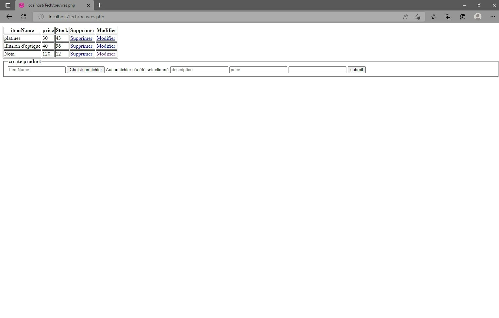Gestion administrateur
L’administrateur peut modifier les produits de la base de données :
o Proposer un nouveau produit
o Supprimer un produit obsolète (le stock devra être égal à 0)
o Modifier le prix d’un produit existant
o Augmenter le stock d’un produit en cas de livraison d’un arrivage d’une commande